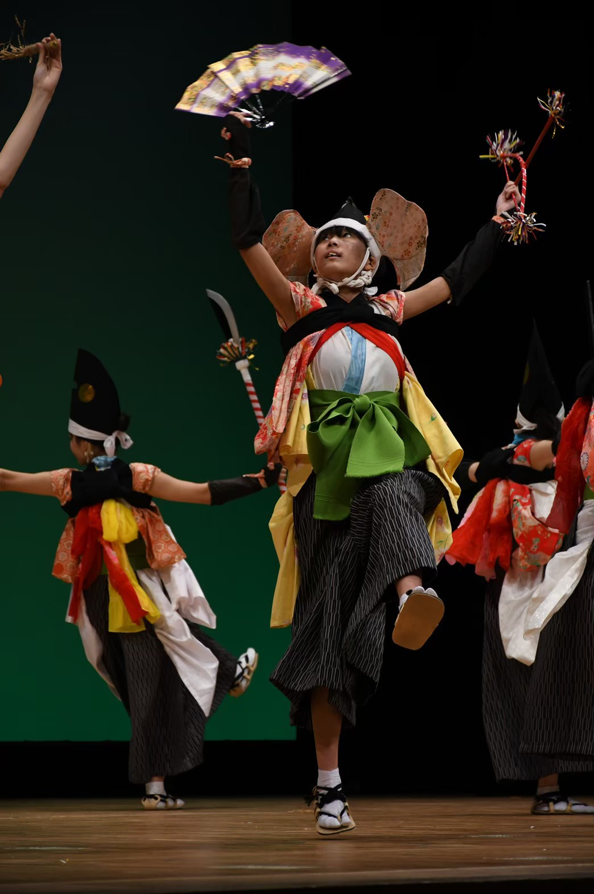
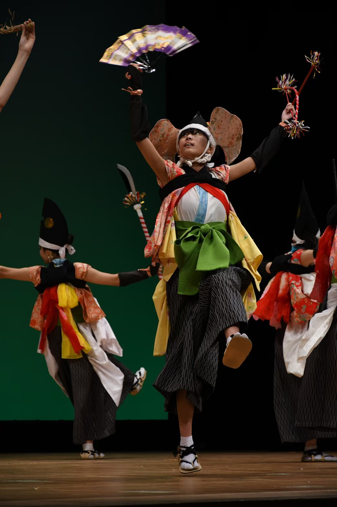

歴史
中里七ツ舞は、天保時代(19世紀初頭)頃から、岩泉町中里地区に伝わる七ツ舞で、五穀豊穣・家内安全・大漁を
祈る勇壮活発な踊りです。中里七ツ舞は
当時、中里神楽の後継者であり、神楽太夫と呼ばれた
武田新九郎が創始し、1940年(昭和15年)頃まで踊り継がれ、何度か舞うことはありましたがその後衰退時代が続きました。1988年
(昭和63年)に見事に復活を遂げ、地元の小・中・高等学校を中心に保存伝承活動に取り組んで、今日に至っています。
ばっけが中里七ツ舞に取り組むのは今年で16年目となります。
踊り
中里七ツ舞には以下の7つの役割があります。
| 先打ち | 先頭に立って進むべき方向を決断し、皆に示す |
| 獣や悪霊を払い、道を整えながら進む | |
| 薙刀 | 木々を切り倒し、獣を追い払う薙刀 |
| 太刀 | 田畑が荒らされぬよう見張りを行う |
| 杵 | 餅をつき、旅路の安全を祈願する |
| 扇 | 小鳥を弓で射ってごちそうをつくり、豊作を祈願する |
| おかめ・ひょっとこ | 皆に笑いを振りまき、心を慰め疲れを癒すひょっとこと、ひょっとこをリードするおかめ |
衣装
中里七ツ舞は踊りもさることながら、その衣装も魅力のひとつです。
踊り手は「袴払い」を意識して練習に取り組むほど、中里七ツ舞にとって“袴”とは重要なものになります。
袴を勢いよく払うことで躍動感が生まれ、見る人々を魅了します。
体の側面から浴衣の袖・裾部分(通称「羽」と呼ばれる)
と、背中の
おかめ・ひょっとこはほかの踊り手衣装と違い、それぞれ桃色、橙色の浴衣を身に着けます。おかめ・ひょっとこのかわいらしさが
この衣装からも伝わってきます。
これらの衣装は、ばっけが中里七ツ舞に取り組み始めてから代々受け継がれてきたものです。
烏帽子や

Photos
 
